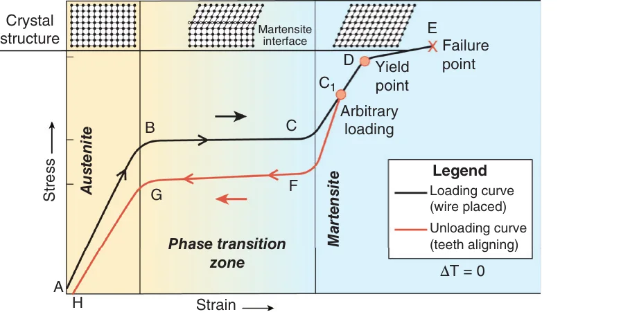

نسخه استخراجشده؛ ترجمه یا تأیید علمی انجام نشده است. وضعیت: captured
نیکل-تیتانیوم در دههی ۱۹۷۰ وارد ارتودنسی شد و تراز اولیه را دگرگون کرد. تفاوتش با استیل در یک چیز است: تغییر فاز.
این آلیاژ دو ساختار بلوری دارد که به یکدیگر تبدیل میشوند:
در استیل، خم کردن یعنی جابهجایی دائمی اتمها. در NiTi، بخش بزرگی از تغییر شکل صرف تبدیل ساختار میشود — و چون این تبدیل برگشتپذیر است، سیم شکل اولیهاش را به یاد میآورد.

وقتی سیم آستنیتی را خم میکنی، پس از مقدار مشخصی تنش، ساختار شروع به تبدیل شدن به مارتنزیت میکند. در این ناحیه اتفاق عجیبی میافتد: کرنش زیاد میشود اما تنش تقریباً ثابت میماند.
روی نمودار، این ناحیه یک پلاتو است — و دو پلاتوی جداگانه داریم:
💡 آنچه به دندان میرسد، پلاتوی باربرداری است. یعنی سیم NiTi در دامنهی بلندی از تغییر شکل، نیروی تقریباً یکسان و سبکی میدهد — دقیقاً آن چیزی که بیولوژی حرکت دندانی میخواهد.
سه محدودیت که اگر نادیده گرفته شوند، دردسر میسازند.
۱، خم نمیشود. فرمپذیری NiTi تقریباً صفر است. هر خمی که بزنی یا برمیگردد یا سیم را میشکند. برای خم مرتبهی اول و دوم باید سراغ استیل یا TMA بروی.
۲، به دما حساس است. سیمهای حرارتی در دمای دهان فعال میشوند؛ با نوشیدنی سرد موقتاً نرم و کمنیرو میشوند. همین ویژگی گاهی به کار میآید — اسپری سرد، جا زدن سیم در کراودینگ شدید را آسانتر میکند.
۳، نیروی سبکش همیشه مزیت نیست. در فاز فینیشینگ که به کنترل دقیق تورک و موقعیت نیاز داری، نیروی ملایم و لقی زیاد NiTi کافی نیست — آنجا سیم مستطیلی استیل کار میکند.
و یک ملاحظهی ایمنی: نزدیک یکپنجم مردم به نیکل واکنش پوستی نشان میدهند، اما واکنش مخاطی واقعی به اپلاینس نادر است؛ نشانهی معمولش قرمزی و تورم گستردهی مخاط، یک تا دو روز پس از نصب اپلاینس است. NiTi نزدیک به نیمی نیکل دارد و استیل حدود ۸٪؛ در بیمار حساس، سیم بتاتیتانیوم (TMA) و براکت تیتانیومی جایگزین مناسباند.
نوع سؤال: ساخت کلمه · 8 خانه
حروف منبع: ت · ی · ت · ز · ن · ر · م · ا
نوع سؤال: ساخت کلمه · 4 خانه
حروف منبع: ک · ی · ل · ن